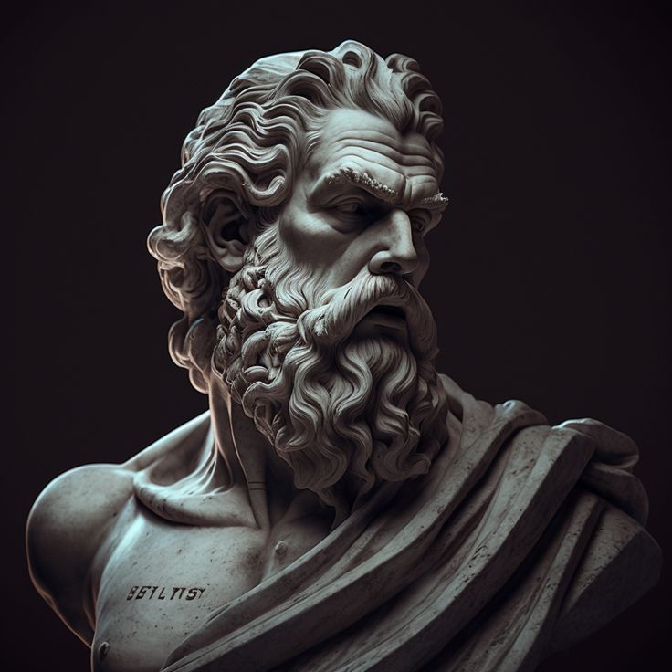

STOICISM
Object of life is not to be on the side of majority but to escape finding oneself in the ranks of insane
-Marcus Aurelius
Difficulties strengthen the mind as labour does the body
-Seneca
Anger cannot be dishonest
-Marcus Aurelius
First say to yourself what you would be, and then do what you have to do
-Epictetus
He who spares the wicked injures the good
-Seneca
Since every man dies, it is better to die with distinction than to live long
-Musonius Rufus
Begin at once to live, and count each seperate day as a seperate life
-Seneca

“When you arise in the morning think of what a privilege it is to be alive, to think, to enjoy, to love…”
“No man is free who is not master of himself...”
TEXT ELEMENT EXAMPLE
- CRA